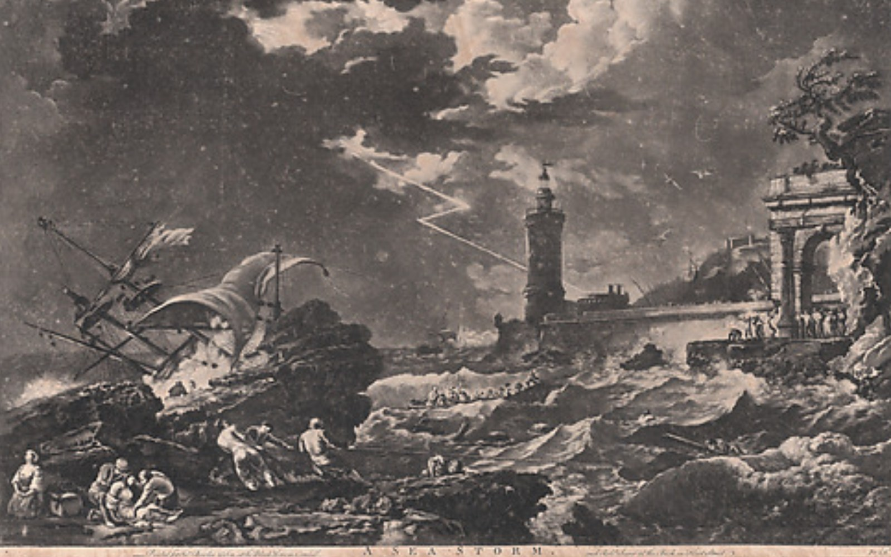

第 4 幕 · 旧灯塔
雾中守塔人
词卡战斗 · 第 1 / 3 回合
你
90/90
词力
3
雾
Ⅱ
图版 IV · 旧灯塔，风暴夜 A Sea Storm, Joseph Vernet, 1752–64 · Met Open Access (CC0)
敌人意图 雾墙压过来，灯光被挤成一条细线。
手牌 4
选一张词卡，读出或拼出；英文要自己取出来。
先点一张词卡。
同一套实体数据 · 四张卡
人物、怪物、道具，不再只是剧情里的字
卡面由 entities.json 渲染：一张卡的数据同时供给图鉴、战斗、剧情与词书；
插画、许可、来源记在 assets/manifest.json。下面是同一套数据在 A 方向下的样子。
资产化 · 不是再画一批图
先有清单，再有美术
每张卡是一个可校验的实体：id / kind / stats / abilities / art / source。
美术资产必须带许可与来源，校验脚本拒绝没有署名的图；卡面渲染器只读数据，不写死在页面里。
{
"id": "monster.fog-keeper",
"kind": "monster",
"name": "雾中守塔人",
"nameEn": "The Fog Keeper",
"rarity": "rare",
"stats": { "hp": 45, "ac": 13, "threat": 3 },
"abilities": [{
"name": "雾墙",
"text": "每回合结束，雾墙推进一格；被吞没时，下一次检定劣势。"
}],
"art": {
"src": "assets/lighthouse.jpg",
"focus": "50% 26%",
"license": "Public Domain",
"source": "Rider-Waite-Smith Tarot, 1909"
},
"words": ["guide", "signal", "warn", "reflect"],
"appearsIn": ["chapter-1/act-4"]
}
卡片
插画
许可
人物 · 拾词者Rider-Waite《隐者》Public Domain
怪物 · 守塔人Henry Farrer《灯塔》CC0 · Met
怪物 · 雾中龙Goltzius 铜版画，1588CC0 · Met
道具 · 透镜Rider-Waite《星币一》Public Domain
场景 · 旧灯塔Vernet《海上风暴》，1752–64CC0 · Met
这些是方向探针用的公版占位图，不是最终美术。正式版应按实体重绘或委托， 并把「来源 / 许可 / 焦点 / 尺寸」写进清单；没有署名的图不进仓库。